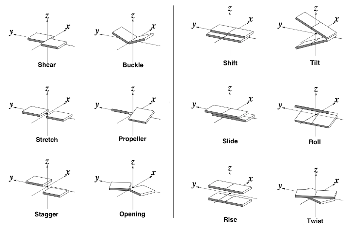
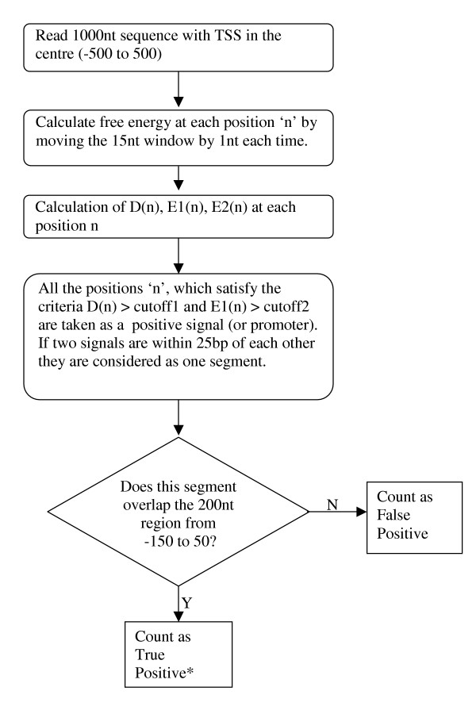
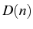
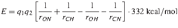
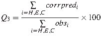
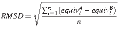

El modelo Nearest Neighbor (NN) aproxima la estabilidad termodinámica de un ácido nucleico en disolución a partir de su secuencia, que se analiza como una secuencia de dinucleótidos solapantes de interacciones aditivas, cuyas energías se han determinado experimentalmente (SantaLucia, 1998; Breslauer et al., 1986).

|
Inspirándose en estructuras moleculares conocidas, este tipo de modelos se han empleado para describir la lectura indirecta del DNA, por su forma, por parte de nucleosomas (van der Heijden et al., 2012) o factores de transcripción (Espinosa Angarica et al., 2008; Michael Gromiha et al., 2004).

|
|

|
Otros modelos amplían el número de vecinos considerados hasta llegar, por ejemplo, a pentámeros:

|
En esta sección aplicaremos el modelo NN a la predicción de promotores:
Este problema ha tenido mayor importancia en procariotas por la gran velocidad con que se han ido obteniendo sus secuencias genómicas, y el algoritmo de Kanhere & Bansal (2005) es un ejemplo de como emplear una estrategia estructural para atacar este problema. El algoritmo consiste en estimar la estabilidad helicoidal del ADN cromosómico, que se supone es menor en las regiones promotoras, donde la maquinaria transcripcional se asienta para comenzar la síntesis de ARN. En concreto este método estima la estabilidad de una (ventana de) secuencia de ADN a ambos lados de una coordenada y define como posibles posiciones promotores aquellas donde la diferencia de estabilidad en torno a una coordenada es significativa.
|
|
Este algoritmo incluye varios parámetros libres y en el artículo original se muestra como entrenarlo para obtener valores adecuados para todos ellos.
|

|
Se han propuesto otras aproximaciones estructurales, como la de Goñi et al. (2007), que identifica regiones promotoras en base a la capacidad de deformación de los pares de bases, estimada por medio de extensas simulaciones moleculares precalculadas.
El repertorio de métodos para predicción de promotores en base a inferencias estructurales es limitado, pero incluye al menos: proStar, ProSOM o el algoritmo de Song (2012). Otras opciones recientes se basan en combinar diferentes fuentes por medio de algoritmos de aprendizaje (Eser & Churchman, 2016).
El ejercicio de esta sección consiste en completar el siguiente programa, usando los parámetros unificados de SantaLucia (1998), para calcular la diferencia de estabilidad  entre dos fragmentos de 50bp y 100bp  y  que flanquean una región central (de 50bp) que podría albergar el promotor. A su vez, estos framentos se calculan sobre valores de estabilidad calculados sobre ventanas de secuencia de longitud 15pb en el artículo de Kanhere & Bansal (2005):
 |
(3.1) |
|  | (3.2) |
| (3.3) |
Como conjunto de datos para la predicción de promotores usaremos las secuencias del fichero K12_400_50_sites,
que contiene coordenadas de ORFs de Escherichia coli con coordenadas -400,+50, con el 0 centrado cerca del codón de inicio.
Qué observas al cambiar el tamaño de la ventana?
#!/usr/bin/perl -w
# prog1.1
# Bruno Contreras-Moreira
# Nearest Neighbor dG calculator
use strict;
# global variables
my $T = 37; # temperature(C)
my $windowL = 15; # window length, http://www.biomedcentral.com/1471-2105/6/1
my %NNparams = (
# SantaLucia J (1998) PNAS 95(4): 1460-1465.
# [NaCl] 1M, 37C & pH=7
# H(enthalpy): kcal/mol , S(entropy): cal/k·mol
# stacking dinucleotides
'AA/TT' , {'H',-7.9, 'S',-22.2},
'AT/TA' , {'H',-7.2, 'S',-20.4},
'TA/AT' , {'H',-7.2, 'S',-21.3},
'CA/GT' , {'H',-8.5, 'S',-22.7},
'GT/CA' , {'H',-8.4, 'S',-22.4},
'CT/GA' , {'H',-7.8, 'S',-21.0},
'GA/CT' , {'H',-8.2, 'S',-22.2},
'CG/GC' , {'H',-10.6,'S',-27.2},
'GC/CG' , {'H',-9.8, 'S',-24.4},
'GG/CC' , {'H',-8.0, 'S',-19.9},
# initiation costs
'G' , {'H', 0.1, 'S',-2.8 },
'A' , {'H', 2.3, 'S',4.1 },
# symmetry correction
'sym' , {'H', 0, 'S',-1.4 } );
my $infile = $ARGV[0] || die "# usage: $0 <promoters file>\n";
print "# parameters: Temperature=$T\C Window=$windowL\n\n";
open(SEQ, $infile) || die "# cannot open input $infile : $!\n";
while(<SEQ>)
{
if(/^(b\d{4}) \\ ([ATGC]+)/)
{
my ($name,$seq) = ($1,$2);
printf("sequence %s (%d nts)\n",$name,length($seq));
# your code here
}
}
close(SEQ);
# calculate NN free energy of a DNA duplex , dG(t) = (1000*dH - t*dS) / 1000
# parameters: 1) DNA sequence string; 2) Celsius temperature
# returns; 1) free energy scalar
# uses global hash %NNparams
sub duplex_deltaG
{
my ($seq,$tCelsius) = @_;
my ($DNAstep,$nt,$dG,$total_dG) = ('','',0,0);
my @sequence = split(//,uc($seq));
my $tK = 273.15 + $tCelsius;
sub complement{ $_[0] =~ tr/ATGC/TACG/; return $_[0] }
# add dG for overlapping dinculeotides
for(my $n=0;$n<$#sequence;$n++)
{
$DNAstep = $sequence[$n].$sequence[$n+1].'/'.
complement($sequence[$n].$sequence[$n+1]);
if(!defined($NNparams{$DNAstep}))
{
$DNAstep = reverse($DNAstep);
}
$dG = ((1000*$NNparams{$DNAstep}{'H'})-
($tK*$NNparams{$DNAstep}{'S'}))
/ 1000 ;
$total_dG += $dG;
}
# add correction for helix initiation
$nt = $sequence[0]; # first pair
if(!defined($NNparams{$nt})){ $nt = complement($nt) }
$total_dG += ((1000*$NNparams{$nt}{'H'})-
($tK*$NNparams{$nt}{'S'}))
/ 1000;
$nt = $sequence[$#sequence]; # last pair
if(!defined($NNparams{$nt})){ $nt = complement($nt) }
$total_dG += ((1000*$NNparams{$nt}{'H'})-
($tK*$NNparams{$nt}{'S'}))
/ 1000;
# please complete for symmetry correction
return $total_dG;
}
{kind=link}